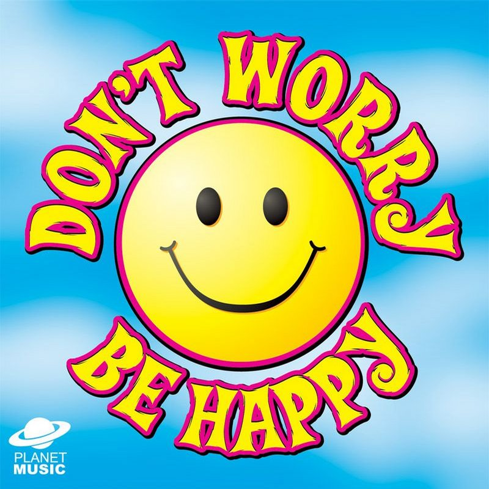
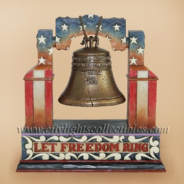
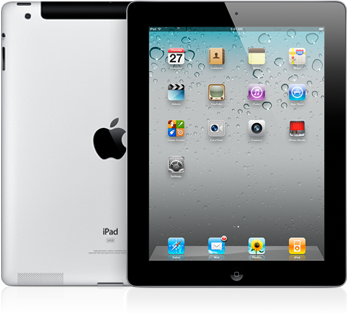
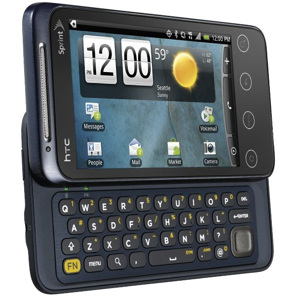
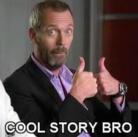

Page About Me
How I define Happiness:
 Happiness to me is waking up with a sense of knowing what you want, knowing how to get there, and then going for it with everything you've got. The journey of trying to achieve things that some people think you can't. The journey of shaping and molding yourself. I believe you don't "find" yourself, you create yourself. That's happiness, knowing what you want and creating yourself to get it. If your vision changes, you change and adapt, learning and shaping yourself to fit the circumstance. But mainly, Happiness is being happy :)
How I define Freedom:
 Freedom is the ability to go after your goal, like I stated above in happiness you need to find what you want, and mold yourself, then go after it with everything you have and more knowing at the end of each day you did everything in your power to get to where you want to be. Freedom is simply your ability to do that. Freedom is your ability to be happy.
My Prediction of what Technology you have.
Well I'd guess that touchscreens have phased on and its now like touch projection, that way you don't scatch your screen. Probably got some fancy projection HD 3D TV's and computers. I'd guess that credit cards are different in a way that identity theft is nearly impossible. You're probably reading website in your self-driving hovercar. Hoping that they found a cure for cancer by now. Wondering if they're cloning yet. Hmm. Well you know technology better than I do.
Quote
"If I have given it my all and still do not win, I haven't lost. Others might remember winning or losing; I remember the journey" -Apolo Ohno
Top 25 Played Songs on My iPod
- Knee Deep by Zac Brown Band
- F**k You by Cee Lo Green
- Dirt Road Anthem by Jason Aldean
- Looking at the Sun by Gramercy Arms
- We Didn't Start the Fire by Billy Joel
- Wanted Dead or Alive by Bon Jovi
- I Just Had Sex by The Lonely Island (ft Akon)
- Blood on Blood by Bon Jovi
- Worlds Apart by Silverstein
- Homeboy by Eric Church
- I'm Still a Guy by Brad Paisley
- My Kinda Party by Jason Aldean
- Help (Beatles Cover) by Silverstein
- Keep the Faith by Bon Jovi
- Big Fat B*tch by Zac Brown Band
- Smile in Your Sleep by Silverstein
- Mountain Music by Alabama
- Live Before You Die by Bon Jovi
- Blaze of Glory by Bon Jovi
- Don't Stop Believin' by Journey
- We're Not Gonna Take It by Twisted Sister
- Smashed Into Pieces by Silverstein
- The Lazy Song by Bruno Mars
- Take a Back Road by Rodney Atkins
- Jack Sparrow by The Lonely Island (ft Michael Bolton)
Sweet Items
| Name | What is it? | General Information |
|---|---|---|
| iPad | Its basically an over grown iPod touch, you can play apps on it, get on mobile Facebook, listen to music, read books, pretty much anything a computer can do but not quite the same. Made by Apple, basically a single platform thats touchscreen and is like a laptop. |  |
| Smart Phone | Touch Screen phone that can get on the internet, download apps, alot like a shrunk down iPad but its a phone as well. All phone providers have their version, you have the HTC 4G Evo Shift. |  |
| Xbox 360 | Sweet Video Gaming System for Champs. Has sweet games and the cool Kinect thing. Look it up. |  |
| Cool Story Bro | A stupid saying that people ALWAYS say. Someone would say something that you thought was stupid and you'd say "Cool Story Bro" |  |
| A social networking site that everyone and their Grandmother uses. |  |